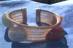
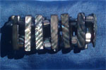
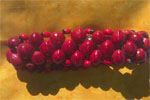
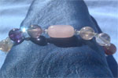
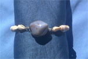
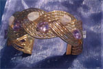
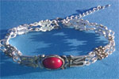
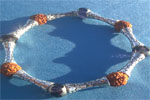
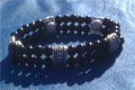

Multi Gemstone Meditation Bracelet $8
Red Jasper - Protection, Luck, Healing, stability, courage and passion. Aventurine - Positive attitude, good luck, prosperity, love and new opportunities.

Abalone Shell Ladder Bracelet $6
Abalone is a calming shell stone mentally and emotionally and strengthening physically. Abalone activates the heart chakra, creates harmony in relationships, beauty and an easy flow of things.

Red and Black chirmi beads $8
These beads are found in India and South America in there forest. In Hinduism they associate with Krishna and Laksmi. They are said to give love and perfection. The saying goes “chirmi beads are for the lucky only, Wearers always has luck on there side.” Some also use them in honor of Shango.

Fluorite and Rose Quartz Bracelet $20
Fluorite is a stone for concentration and Decision making. It holds a Meditative Spiritual Awareness Energy. Rose Quartz is a great Peace and Love stone. This combination of these two stones gives a Soul mate attraction Vibration and a Higher Spiritual Frequency. These stone together create a universal oneness energy

Chalcedony Shell Bracelet $7
chalcedony is a calming stone. That associates with air and water. It has an emotionally healing energy. Its a stone of friendship, Vitality, Stamina, Endurance and removes self doubt. Nurtures the body mind and spirit. Its great for the Throat Chakra and is known to remove sadness and transform it to joy.

Rose Quartz Amethyst Bracelet $12
RWhen Amethyst and Rose Quartz are worn together they generate soul mate energy. These two together clears out your aura, Brings love vibes around you, improves mood and eases stress and fear. This energy helps as a magnet to general love but more important twin flame love.

Metal Tibetan OM Bracelet $7
Mani Padme Hum On the Bracelet Width: 0.5 Inch Fully Adjustable Size

Metal Rudraksha Bracelet $9
Rudraksha beads are holy in the hindu and Buddhist Traditions they are associated with Lord Shiva and the Crown Chakra. Its Benefits are mostly known for giving Healing, Peace, Calmness and Well Being. This is a unique Rudraksha Bracelet it has glassy Purple beads for the crown chakra and Snake print metal for Kudalini energy association. The Beads are Blessed before delivery.

Unique reversible Job bead seed Bracelet $6
some may know them as job seeds which are for gaining work or find a Job. But that are call Viajayanti beads in India. They are mentioned in Ancient text that Krishna made a mala of these beads for Radha. They associate with Love and Attraction. But Lord Skanda when he became a commander. Which could connect to the same energy felt possibly from the Zulu tribes who used and wore them as well.